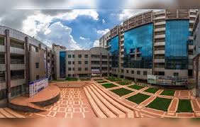

Welcome to Home Page
Independent University, Bangladesh or IUB is a private university in Bangladesh. It is located in Bashundhara Residential Area of Dhaka, Bangladesh. It was established in 1993 under the Private University Act, 1992
The educational curriculum adheres to the North American Liberal Arts Model, with English serving as the medium of instruction. Currently, there are five academic schools in IUB.
